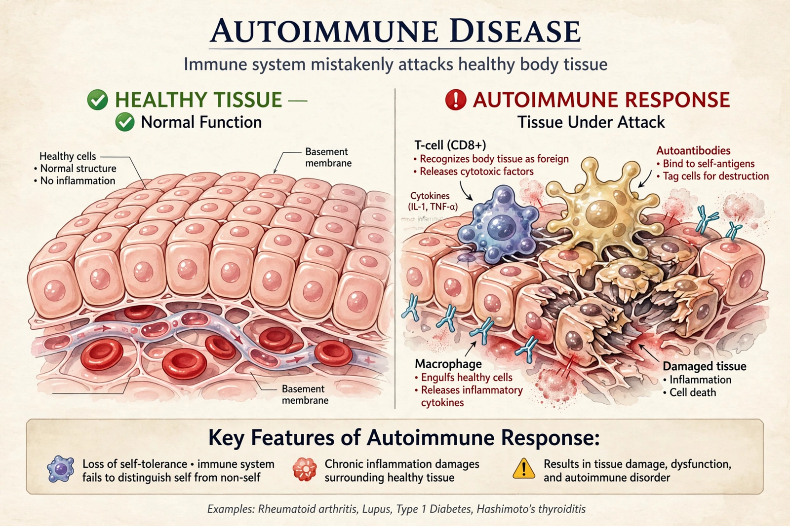

An autoimmune disease is a condition in which the immune system mistakenly attacks the body's own tissues. More than 80 types are recognized, including systemic lupus erythematosus, rheumatoid arthritis, type 1 diabetes, multiple sclerosis, coeliac disease, psoriasis, and Addison's disease.

Autoimmunity arises when central and peripheral tolerance fail, allowing autoreactive T and B cells and autoantibodies to damage tissues. Many diseases show strong HLA associations and a female predominance.
Therapy aims to suppress the aberrant immune response: glucocorticoids such as prednisone and dexamethasone, conventional immunosuppressants, and targeted biologics. Immunosuppression is also central to organ transplantation.